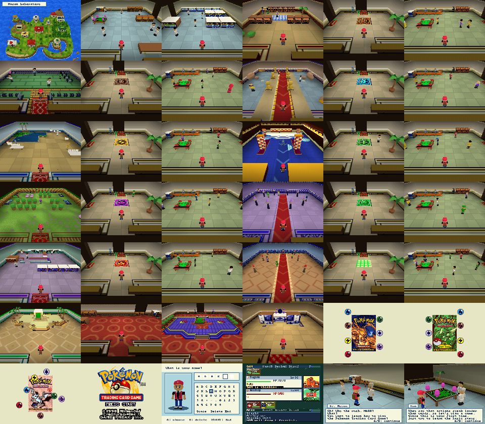

Packed N64 renderer validation
Both configurations passed the complete native game checks: all 34 maps, 42 captures, story, actual engine duel, SRAM, intro and Mason/Sam choreography.
| Target | Captures | Minimum free heap |
|---|
| 320×240 / 4 MiB | 42 | 784,160 bytes |
| 480×360 / 8 MiB | 42 | 4,018,464 bytes |
Native framebuffer pixels before VI filtering, captured in ares. These functional and memory checks do not establish real-console frame rates. Saves were isolated per test run.
Validation details · Results · Renderer timing comparison
Naming
Conversation
All native scenes
320×240 contact sheet · 480×360 contact sheet
